Algoritmul Bellman-Ford rezolva problema drumurilor minime de sursa unica in cazul mai general, in care costurile arcelor pot fi negative. Fiind dat un graf orientat G = ( V, E ) cu functia de cost ω : E → ℝ, algoritmul returneaza o valoare booleana ce indica daca exista sau nu un circuit de cost negativ, accesibil din varful sursa considerat. In cazul in care un astfel de circuit exista, algoritmul semnaleaza ca nu exisa solutie, iar daca nu exista, acesta returneaza drumurile minime si costurile corespunzatoare lor.
Algortmul Bellman-Ford preia numele a 2 matematicieni dintre cei care l-au conceput, Richard Bellman si Lester Ford Jr. , care l-au publicat in 1958, respectiv in 1956. Cu toate acestea, Edward F. Moore a publicat, de asemenea, acelasi agoritm in 1957 si de aceea mai este numit Algoritmul Bellman-Ford-Moore.
La fel ca algoritmul Dijkstra, algoritmul Bellman-Ford utilizeaza tehnica de relaxare, prin intermediul decrementarii estimarii d[v] a drumului minim de la sursa s la fiecare varf
v ∈ V pana este obtinut costul adevarat δ(s, v) corespunzator unui drum minim. Algoritmul returneaza ADEVARAT daca si numai daca nu contine circuite de cost negativ accesibile din sursa.
Bellman-Ford(
G,
s)
- Initializeaza-Sursa-Unica(G, s)
- pentru i → 1, n-1 executa
- pentru fiecare arc (u, v) ∈ E executa
- Relaxeaza(u, v, ω)
- pentru fiecare arc (u, v) ∈ E executa
- daca d[v] > d[u] + ω(u,v) atunci
- returneaza FALS
- returneaza ADEVARAT
Dupa efectuarea initializarii, algoritmul efectueza n-1 treceri prin arcele grafului. Fecare trecere este o iteratie a instructiunii pentru de pe liniile 2-4 si efectueaza relaxarea fiecarui arc o singura data. Dupa efectuarea acestor treceri, liniile 5-8 verifica existenta unui circuit de cost negativ si returneaza valoarea booleana corespunzatoare.
Algoritmul Bellman-Ford este de o complexitate temporala O(n,m) unde n = |V| (cardinalul multimii V) si m = |E|; deoarece initializarea de pe linia1 necesita timp O(n), fiecare dintre cele n-1 treceri de pe liniile 2-4 necesita un timp O(m), iar instructiunea pentru se realizeaza tot intr-un timp de O(m).
Pentru demonstrarea corectitudinii algoritmului, incepem prin a arata ca daca nu exista ciluri de cost negativ, atunci algoritmul determina costurile corecte corespunzatoare drumurlor minime pentru toate varfurile care pot fi atinse din sursa. Demosntratia teoremei urmatoare aduce argumentul de ordin intuitiv pe care este bazat acest algoritm.
-
Teorema 6
Fie un graf orientat G = ( V, E ) cu sursa s ∈ V , functia de cost ω : E → ℝ si presupunem ca G nu contine circuite de cost negativ care sa pot fi atinse din s.In aceste conditii, la terminarea calculului initiat de Bellman-Ford(G,s) avem d[v] = δ(s, v) pentru toate varfurile v accesibile din s.
Demonstratie
Fie v un nod care poate di atins din s si p = < v1 , v2 , ... , vk > un drum minim, unde s = v1 si v = vk (k ≤ n-1).Demonstram prin inductie ca pentru a i-a trecere prin arcele lui G,
i = 0, 1, ..., k, avem d[vi] = δ(s, vi
) si aceasta egalitate se pastreaza in toate momentele de timp ulterioare. Deoarece numarul total de treceri este n-1, stabilirea acestei proprietati este suficienta pentru demonstratie. Dupa initializare, avem d[v0] = δ(s, v0) = 0 si prin Teorema 3 egalitatea se mentine in toate momentele ulterioare de timp. Pentru demonstrarea pasului inductiv, presupunem ca dupa cea de-a (i-1) - a trecere
d[vi-1] = δ(s, vi-1). Arcul (vi-1, vi) este relaxat la cea de-a i-a trecere, deci prin Teorema 4 rezulta d[vi] = δ(s, vi) si egaltatea se pastreaza pentru toate momentele ulterioare de timp, ceea ce incheie demonstratia.
-
Corolarul Teoremei 6
Fie un graf orientat G = ( V, E ) cu sursa s ∈ V , functia de cost ω : E → ℝ. Atunci pentru fiecare varf v ∈ V, exista un drum de la s la v daca si numai daca prin aplicarea algoritmului Bellman-Ford asupra grafului G, la terminare avem d[v] < ∞.
-
Teorema 7(Corectitudinea algoritmului Bellman-Ford)
Presupunem ca algoritmul Bellman-Ford este applicat grafului orientat G = ( V, E ) cu varful sursa s ∈ V , functia de cost ω : E → ℝ. Daca G contine cel putin un circuit de cost negativ accesibil din s, atunci algoritmul returneaza FALS.
Demonstratie
Presupunem ca graful G contine un circuit c = < v1, v2, ..., vk > de cost negativ, accesibil din sursa s, unde v0 = vk. Atunci:

Sa presupunem prin absurd ca algoritmul returneaza ADEVARAT. Atunci pentru
i = 1, 2, ..., k-1 rezulta d[vi+1] ≤ d[vi] + ω(vi, vi+1); deci daca insumam aceste relatii de-a lungul circuitului c, obtinem:

Dar fiecare varf din c apare o singura data, deci

Din moment ce, prin Corolarul Teoremei 6, d[vi] este finita pentru i = 1, 2, ..., k-1 rezulta:

Ceea ce contrazice prima inegalitate. In concluzie algoritmul Bellman-Ford returneaza ADEVARAT daca graful G nu contine circuite de cost negativ accesibile din sursa s si FALS in caz contrar.